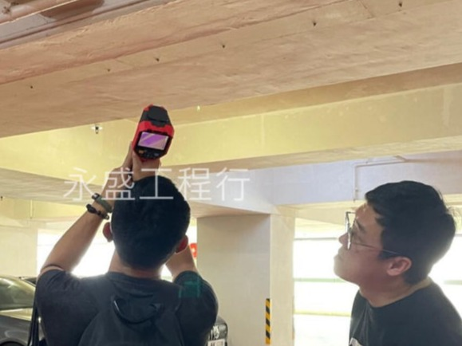

不同的建築部位都有可能發生滲漏。
屋頂：屋頂瓦片或防水層破損、接縫處漏水。
窗戶：窗框、窗戶玻璃周圍的密封不良或老化。
浴室：浴缸、淋浴間、馬桶底座等的防水層破損或施工不當。
廚房：水槽、水龍頭周圍的密封處、排水管道等位置可能漏水。
地板：地板縫隙、接縫處、地板下層防水層老化或損壞。
管道：水管、排水管道接頭處、龍頭、閥門等漏水。
牆壁：外牆或內牆的破損、接縫處漏水。
地下室：地下室牆壁或地板的防水層問題、地下水位高導致水滲入。
如何處理建築物滲漏問題
在處理滲漏問題時，首先需要找出問題的根源，從而採取相應的防水補救措施。在實施防水補救措施之前，需要對建築物進行詳細的檢測和分析，以確定滲漏的原因和位置，從而採取適當的措施進行修復。

利用紅外線攝像頭或紅外線熱成像儀器來檢測建築物表面的溫度變化。
水壓測試：通過向防水層施加水壓，觀察是否有漏水現象來檢測防水效果。
滲透測試：使用特定的染色劑或檢測藥劑於防水層表面塗布，觀察是否有染色或檢測劑滲透到防水層下方。
紅外線檢測：利用紅外線攝像頭或紅外線熱成像儀器來檢測建築物表面的溫度變化。
電子測漏：使用電子水壓儀器或電子感應器來檢測防水層下是否有水分存在。
建築物滲漏問題無疑是困擾許多業主和住戶的一大難題。但只要我們了解其原因，選擇合適的檢測方法和防水材料，就能有效地預防和解決滲漏問題。